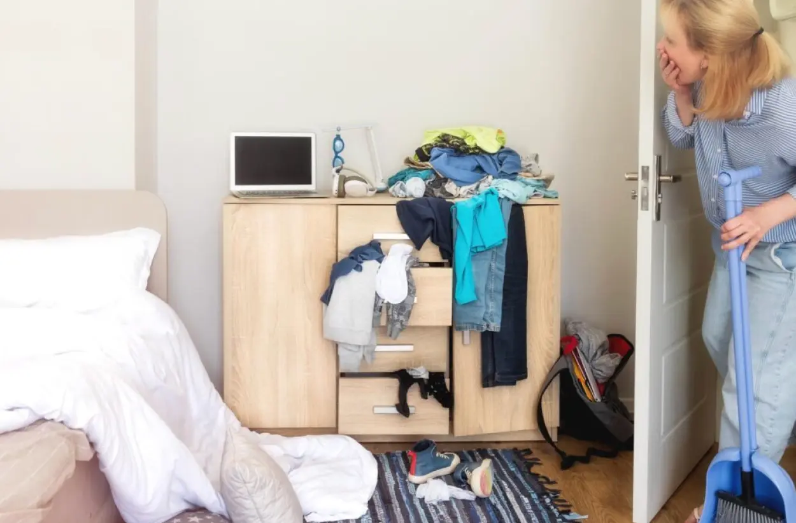
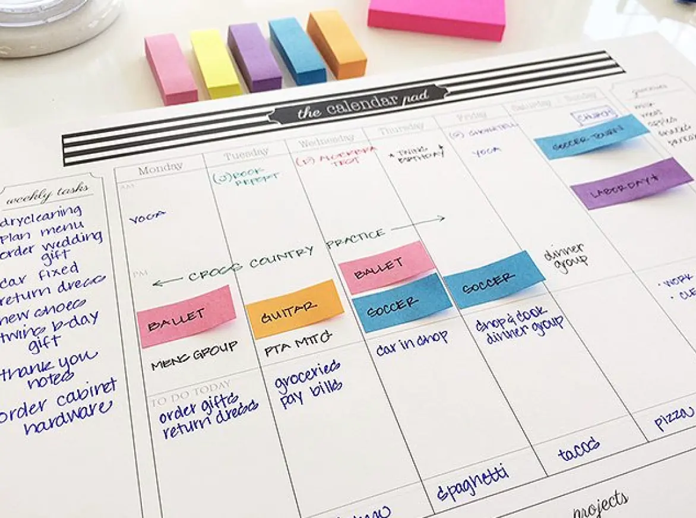

Minimalisme: Alt eller intet?
Minimalisme handler ikke om at eje så lidt som muligt. Det handler om at fjerne det, der forstyrrer, så der bliver mere plads til det, der virkelig betyder noget.
I en hverdag fyldt med indtryk, skærme og information kan minimalisme hjælpe med at skabe mere ro og overskuelighed. Når vi reducerer støj – både digitalt og fysisk – kan vi lettere finde fokus og mental balance. Minimalisme er derfor ikke en perfekt livsstil, men en måde at tage små bevidste valg, der giver mere plads til ro, nærvær og det, der er vigtigt.
Hvor skal du starte?
Når hverdagen føles travl og fyldt med indtryk, kan det være svært at vide, hvor man skal begynde. Minimalisme handler ikke om at ændre hele sit liv på én gang, men om at starte ét sted. Her kan du udforske fire områder, hvor små ændringer kan gøre en stor forskel for din mentale ro.
Spørg dig selv: Hvor oplever du mest støj i din hverdag? Hvis du er i tvivl, så tag testen længere nede.
Skærmen - Hvis din telefon fylder for meget
Mange af os starter og slutter dagen foran en skærm. Notifikationer, sociale medier og konstant information kan gøre det svært at finde ro. Hvis du ofte føler dig distraheret af din telefon eller computer, kan det være et godt sted at begynde. Når vi konstant skifter mellem apps, beskeder og sociale medier, kan hjernen have svært ved at finde ro. Mange små afbrydelser i løbet af dagen kan gøre det sværere at koncentrere sig og skabe en følelse af mental støj.
Ved at være mere bevidst om, hvordan du bruger dine digitale enheder, kan du skabe små pauser for din opmærksomhed. Det handler ikke om at undgå teknologi helt, men om at bruge den på en måde, der giver mere balance i hverdagen.
Selv små ændringer kan gøre en forskel. Når du reducerer antallet af forstyrrelser fra din telefon eller computer, kan du lettere finde fokus og skabe mere ro i din dag.
En guide til skærmenHjemmet - Hvis dine omgivelser føles urolige
Rod og mange ting omkring os kan påvirke vores mentale tilstand mere, end vi tror. Et mere enkelt og ryddeligt rum kan give mere ro i hverdagen. Hvis dine omgivelser ofte føles overfyldte, kan hjemmet være et godt sted at starte. Et mere enkelt og ryddeligt rum kan skabe en følelse af overblik og ro i hverdagen. Når vi reducerer visuel støj i vores omgivelser, bliver det lettere for hjernen at falde til ro.
Minimalisme i hjemmet handler ikke om at have så lidt som muligt, men om at omgive sig med ting, der giver værdi og mening. Når vi fjerner det, vi ikke bruger eller har brug for, kan vi skabe mere plads – både fysisk og mentalt.
Selv små ændringer kan gøre en forskel. Et ryddeligt og overskueligt rum kan gøre det lettere at slappe af og føle sig mere til stede i hverdagen.

En guide til hjemmetHovedet - Hvis dine tanker kører hele tiden
Når vi konstant er omgivet af information og indtryk, kan det være svært at finde mental ro. Tankerne kan hurtigt føles overfyldte, og det kan være svært at skabe overblik over alt det, der fylder.
Mange oplever, at tankerne fortsætter med at køre, selv når de forsøger at slappe af. Det kan gøre det sværere at koncentrere sig og finde fokus i hverdagen. Ved at skabe små pauser og give plads til refleksion kan du hjælpe dit sind med at falde til ro. Det handler ikke om at stoppe alle tanker, men om at skabe små øjeblikke af stilhed og nærvær.
Når du giver dig selv tid til at trække vejret og mærke efter, kan du skabe mere klarhed i dine tanker og lettere finde fokus.
En guide til hovedetTiden - Hvis du altid føler dig presset
I en travl hverdag kan det hurtigt føles som om, der aldrig er tid nok. Når mange opgaver og forventninger fylder, kan det være svært at finde ro og overblik.
Når alt føles vigtigt, kan det være svært at prioritere. Det kan skabe en følelse af konstant pres og gøre det sværere at være til stede i det, man laver. Ved at blive mere bevidst om, hvordan du bruger din tid, kan du skabe mere balance i din hverdag. Små justeringer i din planlægning kan gøre det lettere at finde plads til både opgaver og pauser.
Det handler ikke om at gøre mere, men om at skabe mere plads i din dag til det, der virkelig betyder noget.

En guide til tidenStart i det små
Det kan være svært at vide, hvor man skal begynde, når man gerne vil skabe mere ro i sin hverdag. Ofte er det ikke nødvendigt at ændre alt på én gang – små skridt kan være nok til at gøre en forskel.
Hvis du er i tvivl om, hvor du skal starte, kan du tage den korte test herunder. Den hjælper dig med at reflektere over, hvad der fylder mest i din hverdag, og hvilket område der kan være et godt sted at begynde.